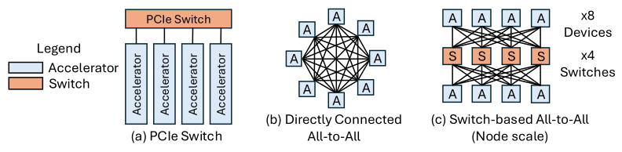

Node-Scale Scale-Up Interconnect

The baseline design uses one or more PCIe switches to give CPUs, accelerators, NICs and peripherals packet-switched any-to-any connectivity. It is standards-based, flexible and easy to integrate, but its bandwidth lags purpose-built accelerator fabrics: even PCIe 6.0 delivers only about 128 GB/s per direction on a ×16 link, which becomes a bottleneck for workloads dominated by collectives such as AllReduce, ReduceScatter and AllGather.
Direct all-to-all topologies remove the switch entirely and wire accelerators to each other. Intel's Gaudi 3 is an explicit eight-accelerator direct all-to-all fabric [1], and AMD Instinct platforms use dense direct Infinity Fabric connectivity across eight GPUs [2]. Single-hop communication gives very high local bandwidth, but wiring and packaging complexity grows quickly with system size — the link count rises quadratically with endpoints.
Switched fabrics dedicated to scale-up traffic recover that scalability. The NVIDIA HGX H100 platform uses four NVSwitch chips to fully interconnect eight GPUs [3], and successive NVLink generations have continued to raise per-GPU fabric bandwidth.
References
- 1.Roman Kaplan. Intel gaudi 3 ai accelerator: Architected for gen ai training and inference. 2024 IEEE Hot Chips 36 Symposium (HCS), 2024.
- 2.Alan Smith and Vamsi Krishna Alla. AMD Instinct™ MI300X: A Generative AI Accelerator and Platform Architecture. IEEE Micro, 2025.
- 3.NVIDIA. NVIDIA NVSWITCH: The World’s Highest-Bandwidth On-Node Switch. 2018.